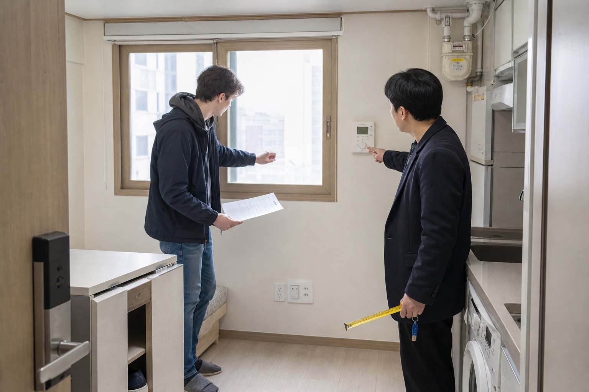

<style>
  .keg-post { --ink:#172033; --muted:#526173; --line:#d9e3ea; --blue:#2563eb; --teal:#0f766e; --amber:#b45309; color:var(--ink); font-family:Arial,Helvetica,sans-serif; font-size:17px; line-height:1.72; max-width:860px; margin:0 auto; }
  .keg-post * { box-sizing:border-box; }
  .keg-post h1 { margin:0 0 18px; font-size:34px; line-height:1.18; }
  .keg-post h2 { margin:40px 0 16px; padding-top:8px; border-top:1px solid var(--line); font-size:26px; line-height:1.25; }
  .keg-post h3 { margin:24px 0 8px; color:#20304a; font-size:20px; line-height:1.35; }
  .keg-post p { margin:0 0 18px; }
  .keg-post a { color:var(--blue); font-weight:700; text-decoration:none; border-bottom:1px solid rgba(37,99,235,.32); }
  .keg-post figure { overflow:hidden; margin:0 0 28px; border:1px solid var(--line); border-radius:18px; background:#f8fbfd; }
  .keg-post figure img { display:block; width:100%; height:auto; }
  .keg-post figcaption { margin:0; padding:10px 14px; color:var(--muted); font-size:14px; line-height:1.45; }
  .keg-post__lead { margin:0 0 28px; padding:20px 22px; border-left:5px solid var(--teal); border-radius:0 14px 14px 0; background:#eefaf7; color:#1d3b43; font-size:18px; }
  .keg-post table { width:100%; margin:14px 0 26px; border-collapse:separate; border-spacing:0; overflow:hidden; border:1px solid var(--line); border-radius:14px; background:#fff; }
  .keg-post th,.keg-post td { padding:14px 16px; border-bottom:1px solid var(--line); text-align:left; vertical-align:top; }
  .keg-post th { background:#eaf3ff; color:#17335f; font-size:14px; }
  .keg-post tr:last-child td { border-bottom:0; }
  .keg-post ol,.keg-post ul { margin:0 0 26px; padding-left:24px; }
  .keg-post li { margin:0 0 12px; padding-left:5px; }
  .keg-post .callout { margin:22px 0; padding:18px 20px; border:1px solid #f2d49d; border-radius:14px; background:#fff8e8; }
  @media (max-width:640px) { .keg-post { font-size:16px; } .keg-post h1 { font-size:29px; } .keg-post h2 { font-size:23px; } .keg-post table { display:block; overflow-x:auto; } }
</style>

<article class="keg-post">
  <h1>How to Find Housing in Korea as an Exchange Student</h1>

  <figure>
    
    <figcaption>Start with the housing office, then compare the full cost and contract—not just listing photos.</figcaption>
  </figure>

  <p class="keg-post__lead">The safest order is: apply for university housing first, prepare a temporary backup, and sign an off-campus lease only after an in-person inspection and document check. A cheap room can become expensive if the deposit, management fee, commute, cancellation rule, or address-reporting documents do not work for an exchange student.</p>

  <h2 data-section="decision">Quick Answer: Which Housing Route Fits You?</h2>
  <table>
    <tr><th>Your priority</th><th>Best first option</th><th>Main trade-off</th></tr>
    <tr><td>Simplest arrival</td><td>University dormitory</td><td>Limited rooms, fixed dates, shared spaces, and strict rules</td></tr>
    <tr><td>Privacy for one semester</td><td>Furnished wolse studio or residence</td><td>Deposit, monthly rent, management fees, and a Korean lease process</td></tr>
    <tr><td>Very short or uncertain stay</td><td>Guesthouse, serviced residence, or school-approved temporary housing</td><td>Higher nightly cost but easier cancellation</td></tr>
    <tr><td>Lowest advertised monthly price</td><td>Goshiwon or shared housing</td><td>Room size, ventilation, address proof, house rules, and refund terms vary greatly</td></tr>
  </table>

  <p>The Korean government’s <a href="https://www.studyinkorea.go.kr/en/life/livingAndHousing.do?tab=accommodation">Study in Korea housing guide</a> identifies dormitories and private housing as common student choices and distinguishes <strong>wolse</strong>, which combines a refundable deposit with monthly rent, from <strong>jeonse</strong>, which relies on a much larger lump-sum deposit. For a one-semester exchange, a dormitory or modest wolse arrangement is usually easier to understand and unwind than a large-deposit jeonse contract.</p>

  <h2 data-section="orientation">1. Ask Your University Before Searching the Open Market</h2>
  <p>Contact the international office and dormitory office as soon as you receive your acceptance. Ask for the application window in Korea Standard Time, eligibility for exchange students, room type, housing period, meal plan, bedding, vacation coverage, check-in rules, payment method, cancellation deadline, and waitlist procedure. Do not assume an exchange nomination automatically reserves a bed.</p>

  <p>A current university notice shows why timing matters. Yonsei University’s 2026 spring notice said exchange and visiting students were eligible, but assignments were first come, first served and housing was not assured. It set a separate application window, payment deadline, housing period, and refund cutoff. It also listed wire transfer, Wise, and Flywire as payment routes for that specific semester. Use the <a href="https://dorm.yonsei.ac.kr/en/board/?id=schedule_en&amp;idx=8927&amp;mode=V">Yonsei housing notice</a> as an example of the details to look for, not as a price or policy for another school.</p>

  <p>Ask whether the dorm room remains available during orientation, exams, university breaks, or an early arrival. A flight arriving before check-in may require a few hotel nights. A semester ending after the dorm closes may create the same problem at departure. Put those gap nights into your budget before comparing a dorm with private housing.</p>

  <div class="callout"><strong>Decision rule:</strong> apply for the dorm even if you prefer an apartment, unless the application creates a non-refundable obligation. A dorm result gives you a price and deadline against which to compare off-campus options.</div>

  <h2>2. Build a Real Housing Budget</h2>
  <p>Compare the <strong>move-in cash requirement</strong>, not only monthly rent. For private housing, record the deposit, first rent payment, monthly management fee, separately metered electricity, gas, water, internet, brokerage fee, cleaning fee, key or access-card charge, bedding, and the cost of temporary accommodation while searching. Ask which items are included and have the answer written into the contract or an attached condition sheet.</p>

  <table>
    <tr><th>Cost</th><th>Question to ask</th></tr>
    <tr><td>Deposit</td><td>When and how is it returned, and what deductions are allowed?</td></tr>
    <tr><td>Monthly rent</td><td>What date is it due, to whose verified account, and is the first month prorated?</td></tr>
    <tr><td>Management fee</td><td>What services are included, and which utilities are billed separately?</td></tr>
    <tr><td>Utilities</td><td>Are meters separate, and how are final bills settled after move-out?</td></tr>
    <tr><td>Brokerage fee</td><td>What is the written calculation and when is payment due?</td></tr>
    <tr><td>Cancellation</td><td>What happens if the visa, semester, or travel dates change?</td></tr>
  </table>

  <p>Do not transfer a “reservation deposit” only because someone says another tenant is waiting. First confirm the property, owner or authorized landlord, licensed broker, refund condition, recipient account, and written contract path. If your Korean bank transfer limit is too low for the deposit, solve that with your bank before signing; do not split payments among unrelated personal accounts.</p>

  <h2>3. Search by Commute and Contract Fit</h2>
  <p>Draw a realistic commute area around campus, including the last walk uphill, transfers, and late-evening service. Search the Korean campus name and neighborhood name, not only the English university name. Save each candidate in a comparison sheet with address, walking time, deposit, rent, management fee, furnishing, move-in date, lease end date, and contact source.</p>

  <p>Start with your university’s housing board or approved partners, then compare established property platforms and local licensed real-estate offices. The Study in Korea page points students to local real-estate apps, but an app listing is only a lead. Photos, map pins, availability, and fees can be incomplete or stale. Never treat a platform badge or message as proof that the person receiving money owns the room.</p>

  <p>If you use a broker in Seoul, the government’s <a href="https://www.easylaw.go.kr/CSP/CnpClsMain.laf?ccfNo=3&amp;cciNo=1&amp;cnpClsNo=1&amp;csmSeq=2853&amp;popMenu=ov">Easy Law guide for international students</a> notes that Seoul designates global real-estate offices that can explain leases in foreign languages. Outside Seoul, ask the university international office whether it maintains a current list of brokers accustomed to foreign students.</p>

  <figure>
    
    <figcaption>Inspect the room while the utilities work; document existing damage before paying the balance.</figcaption>
  </figure>

  <h2 data-section="steps">4. Inspect Every Room Before You Commit</h2>
  <ol>
    <li><strong>Confirm the exact unit.</strong> Make sure the room shown is the room named in the contract, not a sample unit in the same building.</li>
    <li><strong>Test access and safety.</strong> Check the building entrance, room lock, window locks, smoke detector, evacuation route, corridor lighting, and late-night route from transit.</li>
    <li><strong>Look for moisture.</strong> Inspect window frames, wallpaper edges, bathroom corners, under the sink, and behind furniture for condensation, mold, leaks, or recent patching.</li>
    <li><strong>Operate the utilities.</strong> Run hot and cold water, flush the toilet, test drainage, switch on lights and outlets, and ask the agent to demonstrate floor heating, cooling, ventilation, and the utility meters.</li>
    <li><strong>Check the working space.</strong> Measure the bed, desk, storage, refrigerator, washing machine, and luggage area. Confirm which items belong to the landlord.</li>
    <li><strong>Listen and smell.</strong> Visit at the time you expect to study or sleep. Check street noise, hallway noise, restaurant exhaust, smoke, and ventilation.</li>
    <li><strong>Record condition.</strong> With permission, photograph existing scratches, stains, broken fittings, and meter readings. Send the agreed condition list to the landlord or broker and retain the response.</li>
  </ol>

  <p>If an in-person visit is impossible, ask the university for a trusted inspection route or use temporary housing until you can inspect. A live video call is better than photos but still does not prove ownership, smell, noise, water pressure, or the legal condition of the property.</p>

  <h2>5. Verify the Contract and Deposit</h2>
  <p>Before signing, compare the property address and owner information with the real-estate registration record. The Easy Law guide tells students to review the official property record for ownership, mortgages, lease rights, and other registered interests. Ask a licensed broker or qualified adviser to explain anything you cannot read; translation alone does not tell you the legal effect of a clause.</p>

  <p>The contract should clearly identify the parties, exact unit, deposit, rent, management fee, payment dates, lease term, move-in condition, included furniture, utility settlement, repair responsibility, renewal, early termination, subletting, move-out notice, and deposit-return process. Keep the signed contract, payment receipts, broker documents, listing screenshots, condition photos, and all later amendments.</p>

  <p>For foreign tenants, residence reporting matters. The English <a href="https://m.easylaw.go.kr/MOM/SubCsmOvRetrieve.laf?ccfNo=1&amp;cciNo=1&amp;cnpClsNo=1&amp;csmSeq=2495&amp;langCd=700101">Easy Law lease guide</a> explains that a foreign national who completes foreigner registration and reports the change of residence may receive Housing Lease Protection Act protection. The student-specific guide also explains the role of a fixed date in deposit priority. Because the correct protection steps depend on your facts, take the contract to the local community service center and ask what can be completed together.</p>

  <p>Some residential leases must also be reported. The student guide currently states that covered contracts exceeding either a KRW 60 million deposit or KRW 300,000 monthly rent must be reported within 30 days in covered jurisdictions. Rules and exemptions can change, so verify your exact contract at the local office or the official <a href="https://rtms.molit.go.kr/main/systemInfo.do">MOLIT Real Estate Transaction Management System</a>. Do not assume that a landlord or broker has filed it unless you receive confirmation.</p>

  <h2>Costs, Payment, Refunds, and Cancellation</h2>
  <p><strong>Dormitory:</strong> pay only through the method in the official school invoice. Note the application cancellation rule, payment deadline, full-refund cutoff, mid-semester refund formula, and bank charges. At Yonsei in the cited 2026 example, missing the payment deadline could cancel housing without notice, while a full refund required action by a stated pre-move-in deadline. Your university will have its own dates and deductions.</p>

  <p><strong>Private lease:</strong> a signed fixed-term lease is not a hotel booking. If you leave early, the contract may still govern rent, notice, replacement-tenant costs, brokerage costs, and the deposit-return timing. Negotiate a written exchange-semester term or early-exit clause before signing. Never rely on a spoken promise that “the deposit will be fine.”</p>

  <p><strong>Payment proof:</strong> use a traceable transfer to the verified contractual recipient, put the correct purpose in the memo when possible, and obtain a receipt. Keep enough money for the final utility settlement and a few days of overlap at move-out. Do not hand over the final balance until the contract, keys, inventory, and agreed move-in condition are ready.</p>

  <h2>6. Move In and Report Your Address</h2>
  <p>On move-in day, photograph the room and meters, verify every key, test appliances again, and send a written defect list immediately. Ask how to receive utility bills, building notices, parcels, and emergency maintenance. Put your address in Korean into a map app and save the building entrance photo for late arrivals or deliveries.</p>

  <p>The Ministry of Justice’s <a href="https://www.immigration.go.kr/bbs/immigration_eng/230/454085/download.do">Customized Stay Guide</a> says registered foreign residents must report a change of residence within 15 days of moving, while F-4 holders have a 14-day period. It lists passport, residence card, application form, and proof of residence and says an online application may be available through Hi Korea. Exchange students should confirm the current rule for their own status; a school record change does not automatically replace immigration reporting.</p>

  <p>If the room provider cannot give acceptable proof of residence, stop before treating it as your semester home. Ask the university or immigration office what documents are acceptable. The multilingual <a href="https://www.immigration.go.kr/immigration_eng/1862/subview.do">Immigration Contact Center 1345</a> handles immigration and living-in-Korea questions and offers language support.</p>

  <h2 data-section="pitfalls">Foreigner-Specific Blockers and Common Errors</h2>
  <ul>
    <li><strong>No residence card yet:</strong> ask which identity document the landlord, broker, bank, and local office will accept, and whether a later update is required.</li>
    <li><strong>No Korean phone number:</strong> arrange viewings through email, university staff, or a trusted broker; do not let an unknown “helper” control the contract account.</li>
    <li><strong>Foreign transfer delay:</strong> confirm international payment time, recipient fees, refund route, and the school or landlord’s deadline before sending.</li>
    <li><strong>English contract summary only:</strong> ensure the signed Korean contract and any translation refer to the same unit, amounts, dates, and special clauses.</li>
    <li><strong>Management fee hidden:</strong> ask for an itemized explanation and recent seasonal utility examples, while recognizing another tenant’s bill is not a guarantee.</li>
    <li><strong>Lease longer than exchange:</strong> negotiate the end date before paying; do not assume you can transfer or sublet without written consent.</li>
    <li><strong>Deposit paid before verification:</strong> pause and verify the property, owner, broker, account, and refund condition.</li>
    <li><strong>Address cannot be reported:</strong> do not ignore it. Your residence card, mail, health-insurance notices, banking, and immigration obligations can depend on a usable address.</li>
    <li><strong>Only remote photos:</strong> use temporary housing and inspect after arrival rather than accepting avoidable deposit risk.</li>
  </ul>

  <h2>Backup Options When the First Plan Fails</h2>
  <p>If the dorm is full, join the official waitlist and ask whether the international office has cancellations, partner residences, host-family options, or an emergency list. If a private lease is not ready, book a short, cancellable stay near campus and search in person. The higher nightly rate can be cheaper than losing a large deposit on an unverified room.</p>

  <p>If a studio deposit is too high, compare a dorm, goshiwon, boarding house, shared apartment, or serviced residence by <em>total semester cost</em>. For any option, confirm privacy, cooking, laundry, curfew, visitors, parcel delivery, fire safety, proof of residence, minimum stay, and refund terms. The government’s student housing guidance recognizes dormitories, boarding houses, and private leases as different arrangements; none is automatically best for every exchange student.</p>

  <h2 data-section="faq">FAQ</h2>
  <h3>When should I start looking for housing?</h3>
  <p>Start when your university releases exchange housing instructions. Apply for the dorm by its official deadline, then begin off-campus comparison early enough to inspect after arrival without being forced into a rushed transfer.</p>

  <h3>Is a dormitory always assured for exchange students?</h3>
  <p>No. Some universities give exchange students priority, but availability and allocation methods vary. The Yonsei example explicitly states that housing is not assured and uses first-come, first-served assignment.</p>

  <h3>What is wolse?</h3>
  <p>Wolse is a monthly-rent arrangement with an upfront deposit and recurring rent. The deposit is normally intended to be returned after the lease, subject to the contract and legitimate settlement or deductions.</p>

  <h3>Should an exchange student use jeonse?</h3>
  <p>Jeonse requires a much larger lump-sum deposit and creates more deposit-protection work. For a short exchange, use it only after professional review and a clear understanding of the property, registered interests, guarantee options, and exit timing.</p>

  <h3>Can I sign before arriving in Korea?</h3>
  <p>You can encounter remote-signing offers, but it is safer to use school-managed housing or temporary accommodation until you can verify the exact room, documents, recipient, and physical condition. Do not send a large deposit based only on photos or chat messages.</p>

  <h3>How do I protect my housing deposit?</h3>
  <p>Verify ownership and registered interests, use a complete written lease, keep payment proof, take possession, report your residence correctly, and ask the local office about a fixed date and any lease-reporting duty. Seek qualified advice for a large deposit.</p>

  <h3>Can I cancel a private lease if my visa or exchange is canceled?</h3>
  <p>Not automatically. The written termination and special clauses matter. Negotiate a visa or program-cancellation clause before signing and record the notice method, deadlines, deductions, and deposit-return process.</p>

  <h3>What if the landlord will not provide proof of residence?</h3>
  <p>Do not assume an informal receipt will satisfy immigration. Ask the local immigration office, community service center, or 1345 what document is required, and choose housing that can support your legal reporting obligations.</p>

  <h2>Related Guides</h2>
  <ul>
    <li><a href="https://koreaeasyguide.blogspot.com/2026/08/korea-residence-card-formerly-arc-first.html">Korea Residence Card (Formerly ARC): A First-Time Foreigner’s Guide</a></li>
    <li><a href="https://koreaeasyguide.blogspot.com/2026/07/how-to-open-bank-account-in-korea-as.html">How to Open a Bank Account in Korea as a Foreigner</a></li>
    <li><a href="https://koreaeasyguide.blogspot.com/2026/06/how-to-use-naver-map-for-foreigners-in.html">Naver Map in Korea: Search Addresses, Exits, and Walking Routes</a></li>
    <li><a href="https://koreaeasyguide.blogspot.com/2026/07/papago-translation-app-guide-for-korea.html">Papago Translation App Guide for Korea</a></li>
  </ul>

  <h2>Official Sources and Verification Links</h2>
  <ul>
    <li><a href="https://www.studyinkorea.go.kr/en/life/livingAndHousing.do?tab=accommodation">Study in Korea: Living and Housing</a></li>
    <li><a href="https://www.easylaw.go.kr/CSP/CnpClsMain.laf?ccfNo=3&amp;cciNo=1&amp;cnpClsNo=1&amp;csmSeq=2853&amp;popMenu=ov">Easy Law: Finding a Home for International Students</a></li>
    <li><a href="https://m.easylaw.go.kr/MOM/SubCsmOvRetrieve.laf?ccfNo=1&amp;cciNo=1&amp;cnpClsNo=1&amp;csmSeq=2495&amp;langCd=700101">Easy Law English: Lease Agreements and Foreign Tenants</a></li>
    <li><a href="https://rtms.molit.go.kr/main/systemInfo.do">MOLIT: Real Estate Transaction Management System</a></li>
    <li><a href="https://www.immigration.go.kr/bbs/immigration_eng/230/454085/download.do">Korea Immigration Service: Customized Stay Guide</a></li>
    <li><a href="https://www.immigration.go.kr/immigration_eng/1862/subview.do">Korea Immigration Service: Contact Center 1345</a></li>
    <li><a href="https://dorm.yonsei.ac.kr/en/board/?id=schedule_en&amp;idx=8927&amp;mode=V">Yonsei University: 2026 Spring Housing Notice</a></li>
    <li><a href="https://global.seoul.go.kr/web/news/news/bordContDetail.do?brd_no=2&amp;lang=EN&amp;mode=W&amp;post_no=3A171376A59E0108E063C0A8A023C119">Seoul Foreign Resident Center: Safe Jeonse and Wolse Contract Checklist</a></li>
  </ul>

  <h2>Final Summary</h2>
  <p>Apply for university housing first, compare the semester’s total cost, inspect the exact room, verify the contract and payment recipient, and keep every receipt. After moving, complete the correct residence, lease, and deposit-protection steps with the responsible office. If any person rushes the deposit while ownership, address reporting, or cancellation remains unclear, choose temporary housing and keep looking.</p>
</article>
